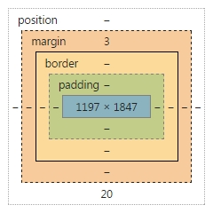
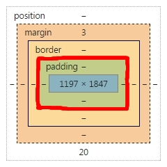
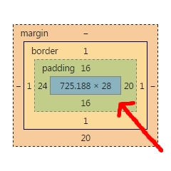
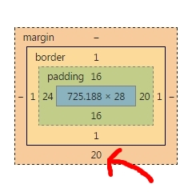

Being Borderline Marginal in a Padded Room
- Peter Jahnes
- 10/1/2014
- Padding, Boarder, and, Margin and some tricks.
Many elements in HTML have margins, borders, and padding. Here I will do my best to explain the 3 concepts. First I will try an explain concepts to make it easier to understand. When you hear margin, think of a book. The area where you scribble notes (beside, above, or below) is the margin. It is the space between the end of the paper and the beginning of the words or pictures. When you hear borders, think of borders between countries. They can be wide or thin, solid or porous, green with trees or black from volcanic rock. Padding, think a children's playground that has foam padding all over it so the kids don't get hurt, on the floor, walls... (and even ceiling?). It is space where nothing really is but is protects the contents from the “dangerous” border.
I think the visual from the devtools in chrome are a very good visualization of this.
- Content: Blue
- Padding: Lime Green
- Border: Yellow
- Margin: Orange
- Position: White
The content in blue is given this size bases on all of the other areas listed above as well as the screen size and or the styling size.
When you set the size of an element, you are telling the browser for the size of the line between border and padding. See the red line below.
The padding, in green, is the buffer between the content and the border. You can have different values for every side.
The border, in yellow, is usually thinner then its friends. It is mainly used to outline things and can have many more types styling effects then margin or padding.

Margin, in orange, is the space on the outside of the border. It is used so that an element doesn't touch another element, put another way, so that there is space between them.
There are a few ways to do the syntax for these styles the first is to separate the sides
- margin-top: 20px;
- margin-left: 45px;
- margin-bottom: 10px;
- margin-right: 5px;
The same can be done with padding and border. But what if you just want all of them the same? It seems silly to have to write all of those out. You can just do this instead. This will give you a margin of 15 pixels for all four sides.
- margin: 15px;
This syntax can be taken further, see below
- Having 2 values, the first is for top and bottom(15px), the second is for left and right(40px).
- margin: 15px 40px;
- Having 3 values, the first is the top (15px), second is left and right(40px), the third is bottom
- margin: 15px 40px 20px;
- Having 4 values, the first is top(5px), second is left(20px), third is bottom(50px), and last is right(30px)
- margin: 5px 20px 50px 30px;
You can also use other measurements for the values
- px : pixels
- em : 1em equals the height of the font that you are using.
- % : percentage of the area that the element is in.
- There are others but these are the main ones you will find yourself using.
A cool trick that you can do with margin and padding, set the right and left to auto. This will allow you to center an element inside of its parent element.
- margin: 0 auto; OR
- margin: 10px auto 40px;
Remember that all of the examples work for border and padding as well. Border does have some extra values though
- border: 5px solid blue
The solid means that it is a solid line, not dashed or dotted. The blue is, well exactly that blue, you can use any color here.
I hope this has helped!